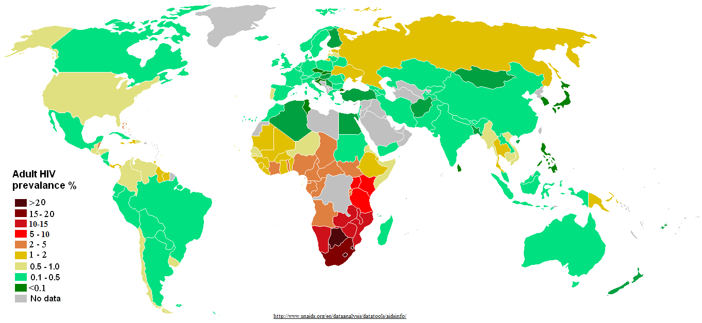

Los microorganismos patógenos causan infecciones. La infección es el ataque de los microorganismos a un ser vivo hospedador. La virulencia o patogenicidad depende de la capacidad que tenga el patógeno de producir una enfermedad.
Los siguientes factores de virulencia determinan la capacidad patogénica de un microorganismo:
- Enzimas extracelulares que actúan degradando tejidos.
- Las Fimbrias que facilitan la adherencia de las bacterias.
- Hemoaglutinina, molécula de la pared bacteriana que permite la unión a los eritrocitos.
- Los flagelos que facilitan la diseminación por el organismo del huésped.
- La capacidad de escapar a la respuesta inmune, por ejemplo, rodeándose de membrana celular perteneciente al huésped.
- Toxinas: son sustancias producidas por el patógeno que tienen efecto tóxico. Hay dos tipos de toxinas: Estas son las exotoxinas que son liberadas al exterior celular y las endotoxinas que son moléculas de la pared bacteriana típicas de Gram -.
|
EXOTOXINAS |
ENDOTOXINAS |
| Tipo molecular |
Proteínas solubles |
Lipopolisacáridos |
| Toxicidad |
Alta |
Baja |
| Destrucción por calor |
Sí |
No |
| Lugar de acción |
Tejidos específicos |
Todo el organismo |
| Anticuerpos |
Inducen la producción de AC |
No inducen la producción de AC |
Tipos de agentes infecciosos (agentes patógenos):
Las enfermedades infecciosas pueden ser producidas por los virus, como el de la gripe, las bacterias, como la que produce la meningitis, los protozoos, como el de la malaria, y por los hongos, como el responsable de la tiña.
En la actualidad se conocen nuevos agentes infecciosos como los Priones responsables de la enfermedad de Creutzfeldt – Jacob u otras encefalopatías espongiformes.
Los agentes infecciosos pueden ser transmitidos mediante contacto directo o indirecto.
- Transmisión por contacto directo:
- Heridas en la piel, ej. Clostridiumtetani.
- Vía sexual, ej. Virus VIH.
- Vía parental de madre a feto, ej. virus de la hepatitis.
- Transmisión por contacto indirecto, utilizando un agente transportador:
- Por el aire, mediante gotitas (aerosoles) de humedad o por partículas de polvo.
- Por el agua y alimentos contaminados debido a la existencia de malas condiciones sanitarias o higiénicas durante la manipulación.
- Por animales, a los que se denomina vectores y son los reservorios de la infección.
Las enfermedades por agentes patógenos se tratan con quimioterapia, utilizando sustancias químicas que actúan de forma más o menos selectiva sobre los patógenos.
En toda sociedad es importante el control de las enfermedades infecciosas para realizar medidas preventivas. Para ello es necesario diagnosticar la enfermedad, conocer el número de casos en un periodo de tiempo, la incidencia y, la prevalencia. En caso de patologías graves y contagiosas, debe ser advertido urgentemente por ejemplo en el caso de la peste, el cólera, la rabia, el ébola...
Las enfermedades pueden ser clasificadas atendiendo a los casos producidos o al área de distribución en:
- Epidemia, cuando la enfermedad infecciosa afecta a un número elevado de la población en un tiempo corto. Suelen producir un gran número de muertes. Un ejemplo es la Viruela o la gripe.
- Endemia, si la enfermedad afecta a las personas de una determinada región, en una época dada. No suele producirse un gran número de casos. La malaria es un ejemplo de endemia, se produce en zonas tropicales y en épocas de lluvia.
- Pandemia, son epidemias que afectan a un gran número de individuos en poco tiempo y en una región muy grande. Por ejemplo en el año 2003 se produjeron un gran número de casos del SARS, o neumonía asiática atípica.

Figura 7. Prevalencia Virus VIH.
{kind=link}